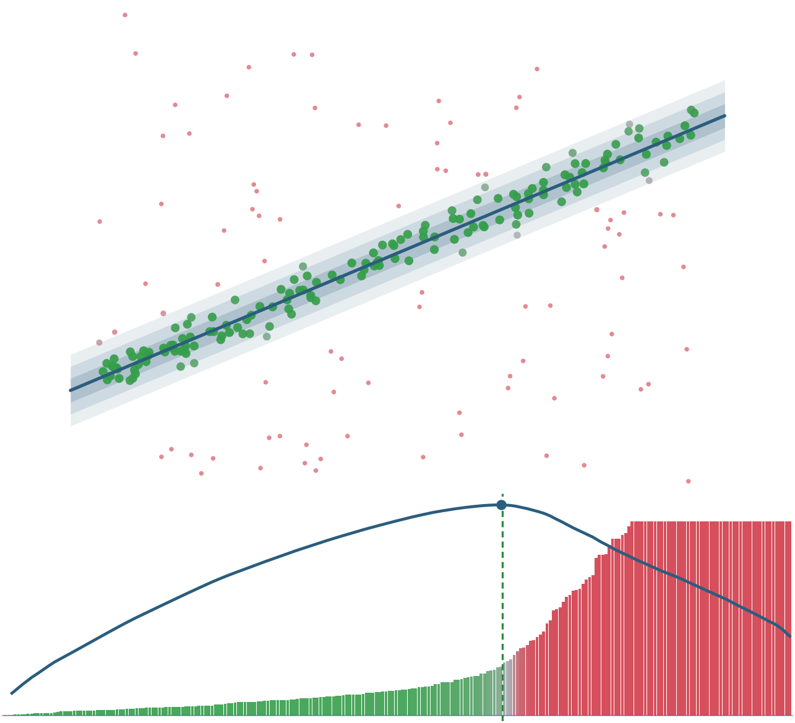
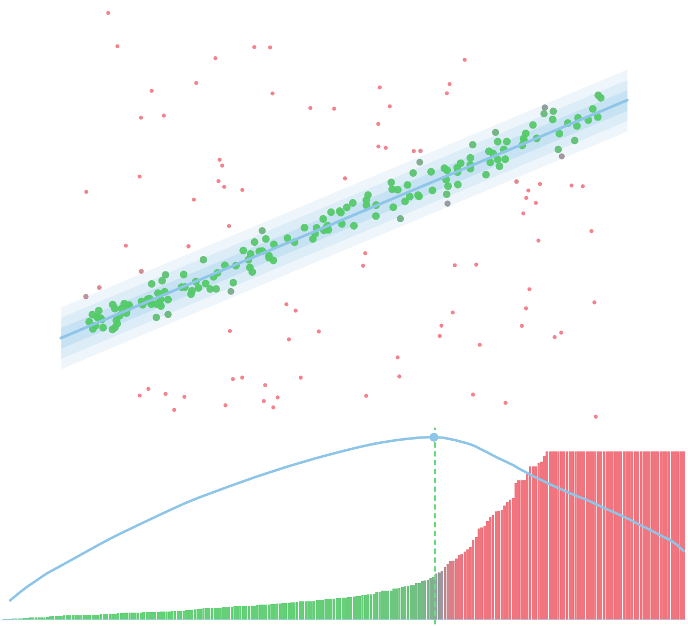
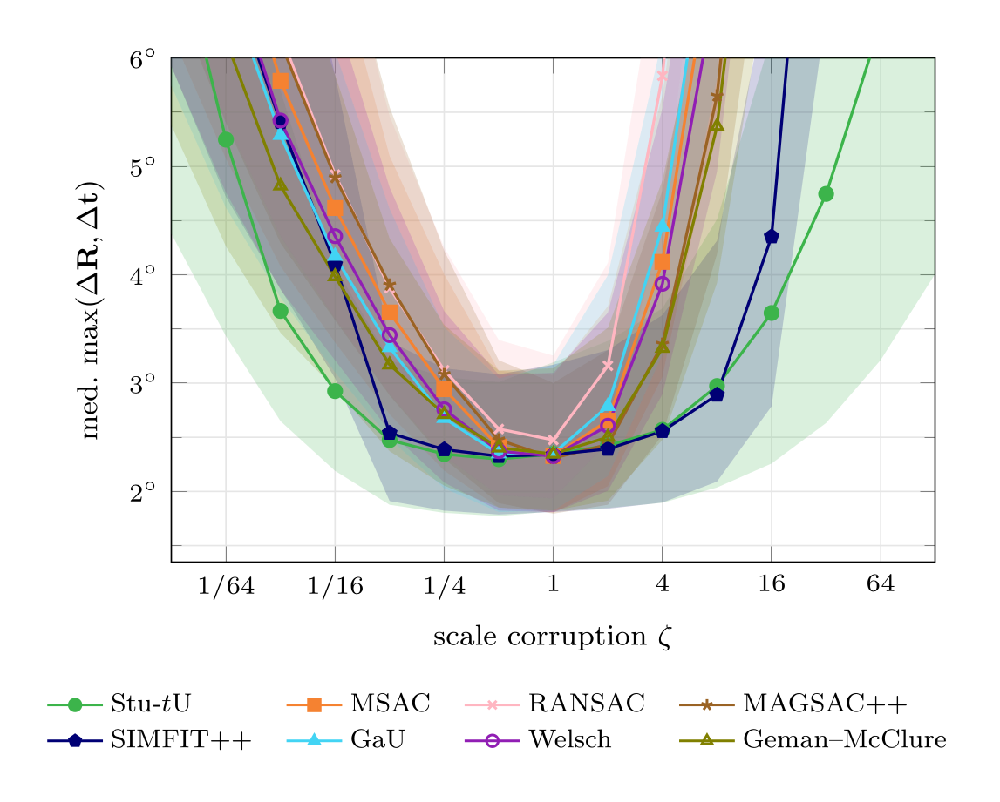
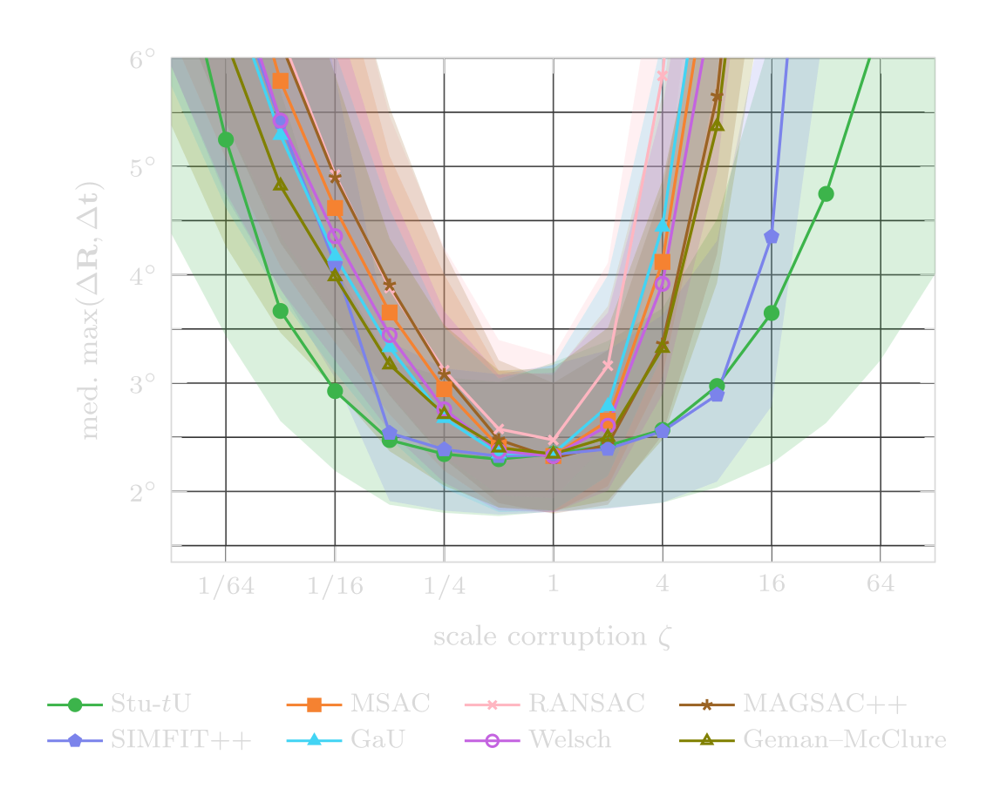
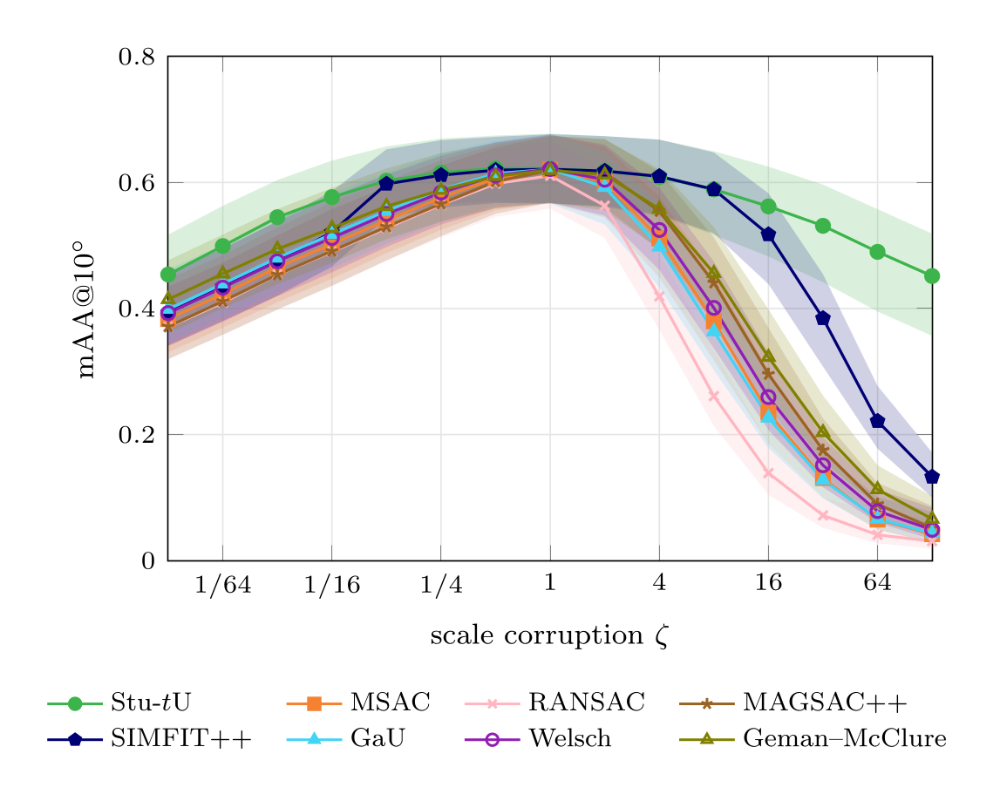
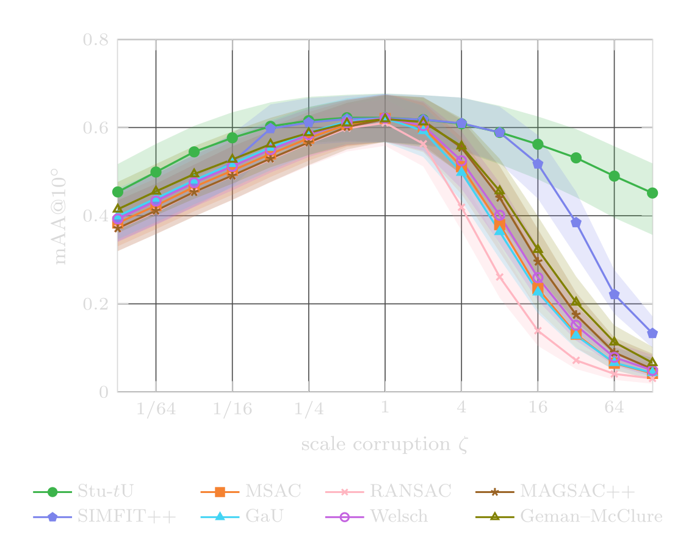

RANSAC Scoring Done Right
Marginalize the Scale, Then Choose the Inliers
James Pritts · Felix Seegräber · Kevin Köser Marine Data Science Kiel University NeurIPS 2026


Score a hypothesis
JeffreysMarginal or InverseGammaMarginal with score_residuals! sorts a model's residuals and sweeps every partition: the score and the selected inlier count, with no threshold and no inlier scale.
Select from a hypothesis pool
best_pool_model picks the best stored model of a benchmark pair under the marginal score or any loss-width baseline (RANSAC, MSAC, GaU, MAGSAC++), on the pair's residual matrix.
Evaluate a width grid on CPU or GPU
stage_ig_shared_from_pairs stages a pool once; grid_evaluate scores it at every width of a grid with KernelAbstractions kernels on CPU() or CUDA.
Weight points for refinement
posterior_scale and PosteriorWeightState turn the selected partition into a scale estimate and Student-t posterior weights for local optimization.
A closed-form RANSAC score in which the inlier scale is genuinely absent. The scale is marginalized under a conjugate inverse-gamma prior for each inlier partition, and the partition is optimized by sort-and-sweep in O(N log N).
Scoring under scale miscalibration
| Median pose error | mAA@10° |
|---|---|
  |
  |
Scoring under scale miscalibration, without local optimization (PhotoTourism essential matrices; 11 test and 10 validation scenes). Each score's hyperparameter is tuned at the correct scale and then evaluated with the scale it is given multiplied by ζ, from 128 times too small to 128 times too large, without retuning. Left: the scene-averaged median pose error, with the axis clipped at 6° so the near-tied calibrated regime stays readable (the threshold-based scores leave the panel under inflation and reach 33°–47° at 128×). Right: mAA@10° at the same operating points, which are tuned on the median. Stu-tU is this package's scale-free marginal score. The baselines are the Welsch and Geman–McClure scores, RANSAC, MSAC, MAGSAC++, the Gaussian–uniform score (GaU) and SIMFIT++, which re-estimates the inlier threshold per pair from held-out residuals of the hypothesis selected on a random half of the correspondences. Shaded bands are scene-clustered BCa bootstrap confidence intervals. From the supplement of Robust Local Optimization Done Right (ACCV 2026).
The method
The score marginalizes the inlier scale analytically and chooses the inlier set with one sort-and-sweep over the residuals (paper, Algorithm 1).
\begin{algorithm}
\caption{Sort-and-sweep computation of the scale-free marginal score. The algorithm returns the best-scoring prefix $\mathcal{I}^* = \{(1),\ldots,(k^*)\}$ in $O(N\log N)$ time.}
\begin{algorithmic}
\REQUIRE per-point scores $q_1,\ldots,q_N$; codimension $d_g$; model parameters $n_\theta$; outlier half-width $a$; prior parameters $(\alpha_0, \beta_0)$
\ENSURE best score $S^*$; optimal inlier count $k^*$
\STATE Sort so that $q_{(1)} \leq q_{(2)} \leq \cdots \leq q_{(N)}$
\STATE $k_{\min} \gets \min\bigl(\lfloor n_\theta/d_g \rfloor,\, N\bigr)$ \COMMENT{largest prefix with $\nu \leq 0$}
\STATE $\mathrm{RSS} \gets \sum_{j=1}^{k_{\min}} q_{(j)}$ \COMMENT{seed the zero-DOF prefix}
\STATE $S^* \gets -\infty$, $\quad k^* \gets 0$
\FOR{$k = k_{\min}+1, \ldots, N$}
\STATE $\mathrm{RSS} \gets \mathrm{RSS} + q_{(k)}$
\STATE $\nu \gets k\,d_g - n_\theta$ \COMMENT{positive DOF guaranteed}
\STATE $S \gets \log\Gamma\bigl(\nu/2 + \alpha_0\bigr) - \bigl(\tfrac{\nu}{2}+\alpha_0\bigr)\log\bigl(\tfrac{\mathrm{RSS}}{2}+\beta_0\bigr) - \tfrac{\nu}{2}\log(2\pi) - (N-k)\,d_g\,\log(2a)$
\IF{$S > S^*$}
\STATE $S^* \gets S$, $\quad k^* \gets k$
\ENDIF
\ENDFOR
\end{algorithmic}
\end{algorithm}
No inlier threshold is set: the sweep's optimal boundary acts as a threshold that adapts to each hypothesis's own scale, $\hat s = \sqrt{\mathrm{RSS}_{k^*} / \nu}$.
Abstract
The most widely used RANSAC variants score candidate models by counting inliers or summing per-point scores that saturate beyond a residual threshold. Every such score requires a user-supplied parameter that is a function of the inlier scale, which must itself be estimated from contaminated data. We remove this dependence by reversing the usual order of inference: rather than estimating the scale and then scoring against it, we marginalize σ analytically in closed form under a conjugate Inverse-Gamma prior for a fixed inlier partition, then optimize over partitions. A single closed-form expression spans the non-informative Jeffreys limit and informative empirical-Bayes priors, so the same score adapts across data-rich and data-scarce regimes without any change to the algorithm. The proposed RANSAC score is the first in which the inlier scale is genuinely absent from the formula. The score admits O(N log N) computation via sort-and-sweep. On a benchmark of nearly 70 000 image pairs spanning different two-view estimation problems and both engineered and learned feature pipelines, the proposed score exceeds the state of the art (RANSAC, MSAC, GaU, MAGSAC++): it stays nearly flat under threshold miscalibration where baselines degrade, reaches near-optimal accuracy from as few as two validation pairs where baselines need ~100× more, and tightens its prior regularization as validation data grows scarce.
Install
The code repository is not public yet; the commands below need access to it and to CauRegistry.
Pkg — RansacScoringDoneRight is published in CauRegistry, not General (Julia 1.12+):
using Pkg; Pkg.Registry.add(RegistrySpec(url = "git@github.com:prittjam/CauRegistry.jl.git")); Pkg.add("RansacScoringDoneRight")git — clone the repository and instantiate it:
git clone git@github.com:prittjam/RansacScoringDoneRight.jl.git && cd RansacScoringDoneRight.jl && julia --project=. -e 'using Pkg; Pkg.instantiate()'Getting started
The Overview introduces the package: scoring versus selection, the scorers, the scale priors, native widths and the pool frame. Experiments describes the scoring studies shipped with the repository.
Score one hypothesis from its residuals. The sweep sorts them, scores every candidate inlier partition with the scale marginalized out, and returns the best score with its inlier count; the scale estimate of that partition follows in closed form:
using RansacScoringDoneRightconst RSDR = RansacScoringDoneRight# `r`: the n residuals of one model hypothesis (codimension 1), e.g. a line# fit's signed point-to-line distances. A line has 2 parameters.scoring = JeffreysMarginal(2, 0.5) # model dof, outlier half-widthsws = RSDR.default_scoring_workspace(n) # sweep buffers, reusableq = Vector{Float64}(undef, n)S, k = score_residuals!(sws, q, scoring, r, n) # score, inlier countσ̂ = posterior_scale(sws, q, k; model_dof = 2) # the partition's scaleInverseGammaMarginal(2, 0.5; alpha0, beta0) scores under an informative prior instead (its workspace is built with that prior, default_scoring_workspace(n; scale_prior)).
Method
- Reverse the order of inference. Threshold-based scores eliminate the inlier/outlier labels first and are left with a hyperparameter that is a quantile of the inlier scale. Here the scale is marginalized first, analytically, under a conjugate inverse-gamma prior for a fixed inlier partition; the partition is then optimized.
- One closed form, two regimes. The non-informative Jeffreys prior is the limit of the inverse-gamma family, so the same expression covers the Jeffreys score, which needs no validation data, and empirical-Bayes priors fit from a small validation set (IG-MLE by type-II maximum likelihood; IG-Robust with α₀ = 1 and a median-anchored β₀).
- Sort and sweep. The score depends on the residual sum of squares, the inlier count and the outlier half-width
a, so every partition of the sorted residuals is scored in one pass: O(N log N) per hypothesis. - The outlier half-width is not a scale in disguise.
aparameterizes the uniform outlier component and is tied to the inlier scale by no quantile relation; where the data dominate the prior, the model the score selects is largely insensitive to it. - Isolate the score. Following Shekhovtsov (2025), every method scores the same per-pair pool of minimal-sample hypotheses and differs only in its scoring function and its single hyperparameter.
Results
- Robust to miscalibration in the data-rich regime. On PhotoTourism and ETH3D the median error of the proposed scores is nearly flat across a two-decade window of the hyperparameter (varying by less than 0.02° on PhotoTourism), while the threshold-based baselines degrade off their optimum.
- Same ceiling at the optimum. Tuned optimally, the proposed scores and the threshold-based baselines reach the same accuracy; the difference is in how much tuning that takes.
- Near-optimal from two validation pairs. The proposed scores reach near-optimal expected test error at |V| = 2, where the baselines need ~100× more validation data; on PhotoTourism and ETH3D their trial-to-trial spread at |V| = 2 is 30–100× smaller.
- The prior matters when data are scarce. On HEB, with about ten inliers per pair, the median-anchored IG-Robust prior regularizes the per-partition scale and gives the lowest error at every validation budget, while Jeffreys, which gives that regularization up, is the least stable.
Citation
The paper is on arXiv (PDF). If you use this project for your research, please cite:
@inproceedings{Pritts2026RansacScoring,
title = {{RANSAC} Scoring Done Right},
author = {Pritts, James and Seegr{\"a}ber, Felix and K{\"o}ser, Kevin},
booktitle = {Advances in Neural Information Processing Systems (NeurIPS)},
year = {2026},
eprint = {2606.27385},
archivePrefix = {arXiv},
primaryClass = {cs.LG}
}